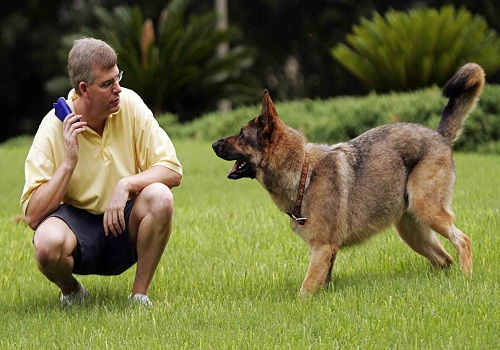
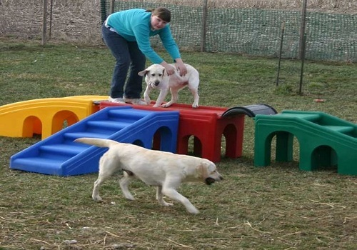
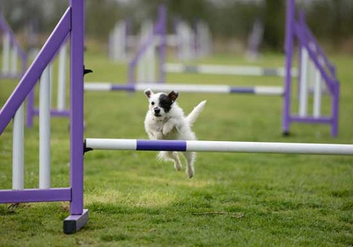
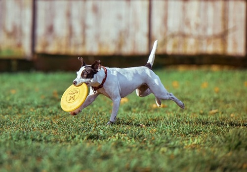

Dogs Training




Intelligence: Dog intelligence is the ability of the dog to perceive information and retain it as knowledge for applying to solve problems. Dogs have been shown to learn by inference. A study with Rico showed that he knew the labels of over 200 different items. He inferred the names of novel items by exclusion learning and correctly retrieved those novel items immediately and also 4 weeks after the initial exposure. Dogs have advanced memory skills. A study documented the learning and memory capabilities of a border collie, "Chaser", who had learned the names and could associate by verbal command over 1,000 words. Dogs are able to read and react appropriately to human body language such as gesturing and pointing, and to understand human voice commands. After undergoing training to solve a simple manipulation task, dogs that are faced with an insolvable version of the same problem look at the human, while socialized wolves do not. Dogs demonstrate a theory of mind by engaging in deception. Communication behavior: Dog communication is about how dogs "speak" to each other, how they understand messages that humans send to them, and how humans can translate the ideas that dogs are trying to transmit. These communication behaviors include eye gaze, facial expression, vocalization, body posture (including movements of bodies and limbs) and gustatory communication (scents, pheromones and taste). Humans communicate with dogs by using vocalization, hand signals and body posture.